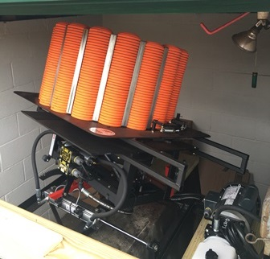

|
In trap, the shooting is done from five adjacent positions in a crescent-shaped formation 16 or more yards behind the "trap." Shooting is done in rotation with the person in number one position firing first and so on. Each person fires at an individual target. After each has fired five shots from a particular position on the crescent, all move one station to the right until everyone on the squad has fired from all five positions for a total of 25 shots.The trap squad consists of five people or less. The "trap" is concealed in a low house in front of the shooting stations. Clay targets are thrown from the house at various angles unknown to the shooter. The targets are thrown away from the "trap" 48-52 yards and in any direction within a radius of 44 degrees. The arc is centered on the "trap" and station 3. As in skeet, the objective in trap shooting is the breaking of a fast moving clay target. The targets used in trap are the same as those used in skeet. Beyond these factors, however, the two sports are markedly different. Unlike skeet, trap contains an element of the unpredictable. Because the shooter can never guess which angle the target will follow, it is impossible to use a cut and dried formula in determining proper leads. The principles of lead, swing, and follow-through are applicable to all forms of shotgun shooting. In trap, just as in skeet, no follow-through after firing is certain to cause a miss. Good stance and proper gun mounting are equally essential to the trapshooter. Most trap targets are rising as well as going away from the shooter. Therefore, they require an upward lead in addition to whatever quartering lead may be indicated Remember to establish proper horizontal and vertical lead and continue your swing and follow-through as you fire. As a new shooter gains experience through practice, they will gradually acquire a conditioned memory image or mental picture, of how far over, right or left to lead every target thrown. It will take time, but eventually, each memory image, neatly tucked away and classified in the mind, will come flashing through with computer speed to match every target angle encountered. Trite but true, practice makes perfect. |